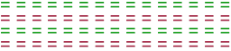

Tüm denemeleri tamamladınız.
Önemli: Test sırasında, yanıtlarınızın doğruluğu hakkında herhangi bir geri bildirim almayacaksınız.
Testin bu bölümü yaklaşık 5 dakika sürecektir.
Unutmayın:
| Tek/Çift:  Rakam tek mi yoksa çift mi? |
Büyüklük: Rakam 5'ten küçük mü, yoksa büyük mü? |
Hazır mısınız?
Herhangi bir sorunuz varsa, lütfen şimdi deney sorumlusuna sorun.
Sağ ok tuşuna bastığınız anda, 3'ten geriye doğru bir geri sayım başlar. Test hemen ardından başlayacaktır.
İyi eğlenceler!